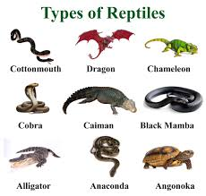
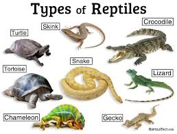
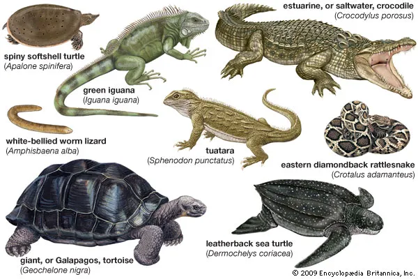

Reptiles are air-breathing, ectothermic (cold-blooded) vertebrates covered in scales or scaly skin, encompassing over 12,000 species. Found worldwide in various habitats, major groups include snakes, lizards, turtles, and crocodilians. The largest living reptile is the saltwater crocodile, while some dwarf geckos are among the smallest
My favorite reptile are snakes and turtles. I really don't know my favorite species of them both beacause I didn't reascrh it to much. The reason why I like turtles is beacause of geographic videos the have on youtube and the same for snakes.
Reptiles live in diverse, mainly warm environments worldwide (excluding Antarctica), ranging from terrestrial deserts to aquatic marine habitats. They are ectothermic, requiring habitats with specific temperature gradients (20–30°C) for basking and cooling, alongside proper humidity, UVB lighting, and, for pets, appropriate substrate.


